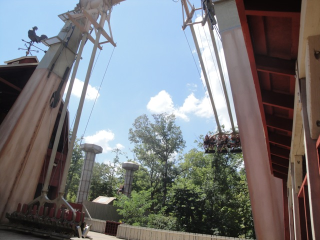
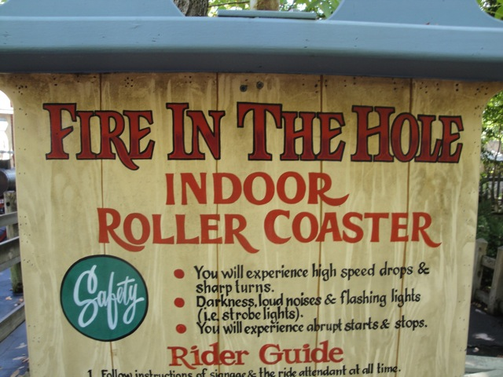
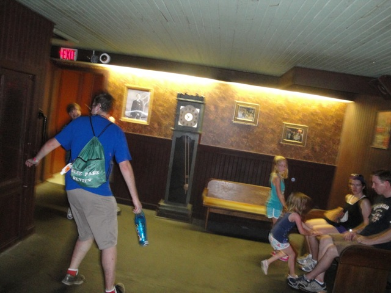
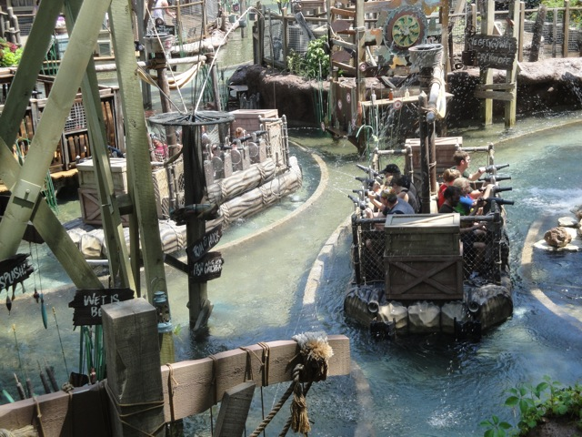
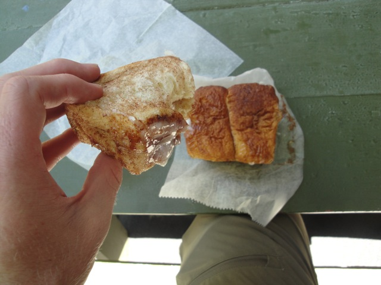
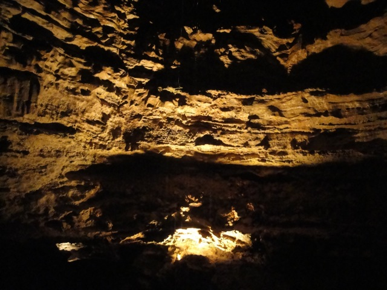

| |
Silver Dollar City Review

Let me just say this right now. SILVER DOLLAR CITY IS FREAKING AWESOME!!!!!!!!! This definetly up as one of the best parks ever visited by Incrediblecoasters. It simply kicks ass in many different ways. Before I went to Silver Dollar City, I had pretty high expectations for this park given it's really good repuatation. However, I was still blown away simply by the sheer awesomeness of everything the park has to offer. Not only does the park have one of the best atmospheres of any theme park, but there is simply so much to do. And on top of all that, have one of the best rollercoasters of all time. The parks roller coaster collection, while small, is INCREDIBLE, the flat rides here are plentiful, and there is simply so much to do. And hell, you don't even need to do anything. Just wandering around this place is freaking awesome. You can seriously just wander around Silver Dollar City, munch on just about anything they serve at the park, and just ride random rides for no reason and have a great time. That is something you can only do at a truely great park. So yeah. In case you haven't gotten the message, this park is awesome and down below are some of the fine reasons on why.
Rollercoasters
There is a link to a review of all the Rollercoasters at Silver Dollar City.
Please keep in mind that there is no review of Time Traveler because it didn't exist when I last visited.
Top Coasters
Outlaw Run Review

Very Good Coasters
Powder Keg Review

Wildfire Review

Fun Coasters
Thunderation Review

Kiddy Coasters
Grand Exposition Coaster Review

Flat Rides
Here are the reviews of all the Flat Rides at Silver Dollar City. First up is their star flat ride, the Giant Barn Swing. This is a giant S&S Screaming Swing. And as such, it kicks major ass, like all S&S Screaming Swings. Though this one is particuarly great due to the theming on the ride, the view of the Ozarks that you get, and just the fact that it's in Silver Dollar City. The park also has a disco, which while not amazing, does run a really fun program that does actually manage to spin a little. And finally, I rode the teacups here. They were nothing special, but I had a blast on them since I was just so happy walking around riding random stuff at Silver Dollar City. The park also has a storm ride, some chairswings, and a pirate ship in its flat ride collection.

S&S Screaming + Great Theming & View = Awesome!!! =)
Dark Rides
Silver Dollar City has a really good dark ride collection. That is pretty impressive since most parks don't even have a dark ride, and when they usually do, it's just something along the lines of a Sally Shooting Dark Ride. Meh. This park not only has many different dark rides, but none of them are meh!!! That is not an easy task to do. In fact, this usually something reserved for Disney and Universal Parks. So yeah. Just more evidence of the fact that Silver Dollar City kicks ass!!! Anyways, the first dark ride we'll be talking about is Fire in the Hole, one of the best dark rides in America. Now while many people will claim that Fire in the Hole is a credit, Nope. It's a dark ride. People say that because of the two drops at the end, it counts as a credit. But Fire in the Hole is as much of a credit as Pirates of the Carribean is a shoot the chutes ride for its two drops in the beginning. But enough of that, back to Fire in the Hole's awesomeness. This dark ride takes you through the eyes of a burning city. You're a firefighter heading through the city and up to try and put out the fire. And to suprise us at the end, there are two drops. Seriously, they just shout "FIRE IN THE HOLE!!!" And you drop, and to suprise us even more, there's a splashdown at the bottom of the drop to slow us down as well as provide the explination as to how we put out the fire. See, it was the splash that put out the fire, not us. We really are the worst firefighters ever. =) So yeah. Fire in the Hole really is one of the best dark rides ever (Oh wait, it has a splashdown, so it's really a water ride. How stupid of me for misclassifying it). But that's not it for dark rides at Silver Dollar City. The park also has a shooting dark ride. But this is not just any ordinary shooting dark ride. This was as a matter of fact, the first shooting dark ride ever built. So that's awesome. See, before shooting dark rides became popular, and before Sally Co., Silver Dollar City wanted a ride themed to getting escaped prisoners back in prison. So they created the first shooting dark ride ever. This didn't cause the shooting dark ride boom, that was caused by Disney World's Buzz Lightyear. However, it is a really fun ride and that little peice of trivia just makes you respect the ride more. They also have a fun walk through called Grandpa's Mansion. It's hidden among the park and not advertised too well, but it really is a fun walkthrough that's always good for some fun. And there's no line, and it's in the shade, and it's trippy. What more do you want?

Definetley one of the best dark rides in the country.
 First shooting dark ride ever built, and still one of the better ones.
First shooting dark ride ever built, and still one of the better ones.

Never fails to bring a smile to my face.
Water Rides
Once again, Silver Dollar City is home to a really good water ride. Now, I only rode one of their water rides, but the one I rode was awesome!!! Tom and Huck's River Blast. Now this is a splash battle, so the objective of the ride isn't to drop or do anything. The only thing you do on that ride is get wet. REALLY F*CKING WET!!!! AND IT IS AWESOME!!!! I'm usually a waterphobe, so a Splash Battle by its very nature tends to turn me off. But River Blast is just so damn fun that you can't help but put a smile on your face. And while I didn't ride their log flume or rapids ride, they both look like really fun rides.

Just pure fun. Pure wet fun.
Dining
I'm just gonna come out and say it right now. Silver Dollar City has some of the best food within the amusement park industry. No joke. It's all seriously that good. Let's see. What all do they sell here. Oh man. Where do I begin? Well first off, their Cinammon Bread. HOLY SH*T!!! THIS STUFF IS AMAZING!!!! It doesn't even taste like bread. It's like a cinammon roll, mixed with a doughnut, smothered in badassness, with a shot of an orgasm on top. That's what the Cinammon Bread tastes like. They also serve giant skillets that they use to cook all sorts of food in, and a plate full of that is just amazing. Now the actual group dinner that they served us at Silver Dollar City was freaking amazing. I'm not sure if they sell it in the park, but the food they served us was phenomenal. I got high quality fried chicken, a dinner roll, mashed potatoes, macaroni and cheese, peaches, and a slice of lemon meruigne pie. None of that is typical amusement park crap. In fact, if I said that I had the following things for dinner, most of you would never guess I had it in an amusement park. You'd probably think I was at a place like Woodranch Grill or something like that. But this is much better than Woodranch Grill, and I really like Woodranch Grill. So that says something about the quality of this dinner. And throughout the park, they just have tons of food for you to snack on and satisfy your taste buds (Get a Red Cream Float).

Do not underestimate the tastiness of the Cinammon Bread.
 This stuff from the skillets is so good. =)
This stuff from the skillets is so good. =)
 This was my meal at an amusement park.
This was my meal at an amusement park.
Theming and Other Attractions
Here are the reviews of all the other stuff at Silver Dollar City. Now for theming, the park has an 1800s town look. And it succeeds in this theme with flying colors. The park itself really feels like an 1800s Missouri Town in every single aspect. And not only do the rides help the theme by making sure that they fit in well and help create atmosphere, but just the geographical location of this park kicks ass as well. The park takes advantage of it's location in the Ozark Mountains to really nail down the 1800s look that the park wants. That alone kicks ass. And as for other stuff to do, oh man. Silver Dollar City has PLENTY!!! Well first off, you can just wander around and be happy, but you can do that at any park. Silver Dollar City has a lot of shows and other really cool stuff to see and do in the park. But what really makes the park stand out is the Marvel Cave. This is an actual cave that the park has, and they take guests on tours of the cave. That is just f*cking awesome. I mean, how many theme parks have their very own cave tour? And the most shocking part of all, it's not an upcharge. That's just incredible!!! For the price of admission, you get a free cave tour, plus everything mentioned above!!! And on top of that, it's a f*cking steal. I mean, a cave tour alone usually costs around $20. A Silver Dollar City Ticket without a discount is $60. And Silver Dollar City has more than triple the amount of the stuff that a cave tour alone does. So yeah. It's pretty damn impressive. And the cave itself kicks ass. It's just really great to see a cave and see nature in that way.

Am I at a theme park?
In Conclusion
Silver Dollar City is an amazing park. Everything about this park is simply amazing. You constantly have to remind yourself that you're at a theme park. Which is one of the indicators that Silver Dollar City is definetly one of the best theme parks ever visited by Incrediblecoasters. In fact, if you read our Top 10 Lists, you'll notice that Silver Dollar City comes up quite a lot. It tied for the #4 spot in the Top 10 Theme Parks list, along with Dollywood. That by itself proves that the park kicks ass. But not only that, but Outlaw Run got the #2 spot on our Top 10 Wooden Coasters List, Fire in the Hole tied with Blazing Fury @ Dollywood for the #6 spot on our Dark Ride List, Thunderation got the #4 spot on our Top 10 Most Underrated Coasters List, and the park tied with Dollywood for the #2 spot on our Top 10 Theme Park Dining Options List. Yeah, I think I proved just how similar Dollywood and Silver Dollar City are. Anyways, it's clear that we frequently recognize Silver Dollar City for all of its greatness. And this review and all those spots on our Top 10 Lists alone should tell you why you should come to Silver Dollar City immedietly.
Enthusiast FAQs.
*Are there kiddy coaster restrictions? - No. Grand Exposition Coaster does not have any restrictions.

Tips
*Spend all day here. There really is so much to see.
*Be prepared to spend all your money snacking here.
*I'm totally serious about spending all your money. I'm not only extremely cheap and RARELY spend money on anything at parks, but during my visit to Silver Dollar City, I was even cheaper than normal due to me being broke from buying my video camera. And even my brokeass self wasted the little money I had snacking. You will do it.
*It's totally worth the money to snack your way around the park.
*DO NOT MISS THE CINAMMON BREAD!!!!
*Take the time to check out the Marvel Cave.
*Look out for random bees. They'll sting you on the parks rollercoasters when you least expect it.
*Have Fun!!!!
Theme Park Category:
Theme Parks
Location
Branson, Missouri, USA
Last Day Visited
July 20, 2013
Video
I have yet to make a video for Silver Dollar City. I'll have to do that soon.
Complete Update List
2013
Texas/Rocky Mtn Road Trip
2010
TPR's Middle America Trip
Here's a link to the parks website.
Home
|